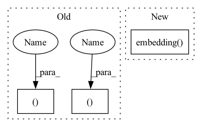

Pattern ID :15359
Before Change
def forward(self, input, hidden):
embedded = self.embedding(input).view(1, 1, -1)
output = embedded
output, hidden = self.gru(output, hidden)
return output, hidden
def initHidden(self):
return torch.zeros(1, 1, self.hidden_size, device=DEVICE)
After Change
self.gru = nn.GRU(HIDDEN_SIZE, HIDDEN_SIZE, num_layers=NUM_LAYERS_ENCODER)
def forward(self, _input, hidden):
return self.gru(self.embedding( _input) .view(1, 1, -1), hidden)
@staticmethod
def init_hidden():In pattern: SUPERPATTERN
Frequency: 4
Non-data size: 3
Instances Fragment ID: 52076058
Project Name: asahi417/lm-question-generation
Commit Name: 807e2131b9e761d29682f6ddb83c19ca665d4f44
Time: 2022-12-25
Author: asahi1992ushio@gmail.com
File Name: misc/qag_model/lstm_model/model_training.py
M Class Name: EncoderRNN
N Class Name: EncoderRNN
M Method Name: forward(3)
N Method Name: forward(3)
M Parent Class: nn.Module
N Parent Class: nn.Module
M File Name: misc/qag_model/lstm_model/model_training.py
N File Name: misc/qag_model/lstm_model/model_training.py
M Start Line: 60
M End Line: 63
N Start Line: 53
N End Line: 53
Before Change
def forward(self, input, hidden):
embedded = self.embedding(input).view(1, 1, -1)
output = embedded
output, hidden = self.gru(output, hidden)
return output, hidden
def initHidden(self):
return torch.zeros(1, 1, self.hidden_size, device=DEVICE)
After Change
self.gru = nn.GRU(HIDDEN_SIZE, HIDDEN_SIZE, num_layers=NUM_LAYERS_ENCODER)
def forward(self, _input, hidden):
return self.gru(self.embedding( _input) .view(1, 1, -1), hidden)
@staticmethod
def init_hidden(): Fragment ID: 52076059
Project Name: asahi417/lm-question-generation
Commit Name: 807e2131b9e761d29682f6ddb83c19ca665d4f44
Time: 2022-12-25
Author: asahi1992ushio@gmail.com
File Name: misc/qag_model/lstm_model/model_training.py
M Class Name: EncoderRNN
N Class Name: EncoderRNN
M Method Name: forward(3)
N Method Name: forward(3)
M Parent Class: nn.Module
N Parent Class: nn.Module
M File Name: misc/qag_model/lstm_model/model_training.py
N File Name: misc/qag_model/lstm_model/model_training.py
M Start Line: 60
M End Line: 63
N Start Line: 53
N End Line: 53
Before Change
h_label = self.embedding(label)
proj = torch.mul(h, h_label)
cls_output = torch.sum(proj, dim=[1])
return None, None, authen_output + cls_output
elif self.auxiliary_classifier and not self.projection_discriminator and not self.contrastive_training:
authen_output = torch.squeeze(self.linear5(h))
cls_output = self.linear6(h)
return None, cls_output, authen_output
else:
authen_output = torch.squeeze(self.linear5(h))
return None, None, authen_output
After Change
elif self.conditional_strategy == "cGAN":
authen_output = torch.squeeze(self.linear1(h))
proj = torch.sum(torch.mul(self.embedding( label) , h), 1)
return authen_output + proj
elif self.conditional_strategy == "ACGAN": Fragment ID: 52076056
Project Name: postech-cvlab/pytorch-studiogan
Commit Name: a7dd19bc6a2a26dd21c0cb59ccfe0c4933e669ef
Time: 2020-07-18
Author: first287@naver.com
File Name: models/dcgan.py
M Class Name: Discriminator
N Class Name: Discriminator
M Method Name: forward(3)
N Method Name: forward(3)
M Parent Class: nn.Module
N Parent Class: nn.Module
M File Name: models/dcgan.py
N File Name: models/dcgan.py
M Start Line: 226
M End Line: 252
N Start Line: 232
N End Line: 259
Before Change
)
def forward(self, batch):
x, y, mask = batch["x"], batch["y"], batch["mask"]
bs, njoints, nfeats, nframes = x.shape
x = x.permute((3, 0, 1, 2)).reshape(nframes, bs, njoints * nfeats)
// embedding of the skeleton
x = self.skelEmbedding(x)
// only for ablation / not used in the final model
if self.ablation == "average_encoder":
// add positional encoding
x = self.sequence_pos_encoder(x)
// transformer layers
final = self.seqTransEncoder(x, src_key_padding_mask=~mask)
// get the average of the output
z = final.mean(axis=0)
// extract mu and logvar
mu = self.mu_layer(z)
logvar = self.sigma_layer(z)
else:
// adding the mu and sigma queries
xseq = torch.cat(
(self.muQuery[y][None], self.sigmaQuery[y][None], x), axis=0
)
// add positional encoding
xseq = self.sequence_pos_encoder(xseq)
// create a bigger mask, to allow attend to mu and sigma
muandsigmaMask = torch.ones((bs, 2), dtype=bool, device=x.device)
maskseq = torch.cat((muandsigmaMask, mask ), axis=1)
final = self.seqTransEncoder(xseq, src_key_padding_mask=~maskseq)
mu = final[0]After Change
assert input_dim == self.input_dim
// embedding of the skeleton
x = self.embedding( x)
// adding the mu and sigma queries
xseq = torch.cat((self.mu_query[y][None], self.sigma_query[y][None], x), axis=0)
Fragment ID: 52076057
Project Name: bioshape-lab/pirounet
Commit Name: fd4ab8620c53c7aba42f8d9f52634ccba9fabe1f
Time: 2022-05-25
Author: nmiolane@harold.ece.ucsb.edu
File Name: move/models/classifiers.py
M Class Name: ActorClassifier
N Class Name: ActorClassifier
M Method Name: forward(2)
N Method Name: forward(2)
M Parent Class: torch.nn.Module
N Parent Class: torch.nn.Module
M File Name: move/models/classifiers.py
N File Name: move/models/classifiers.py
M Start Line: 189
M End Line: 226
N Start Line: 177
N End Line: 199
Before Change
embeddings = self.embedding(encoded_captions) // (batch_size, max_caption_length, embed_dim)
// 初始化LSTM状态
h, c = self.init_hidden_state(encoder_out) // (batch_size, decoder_dim)
// 我们一旦生成了<end>就已经完成了解码
// 因此需要解码的长度实际是 lengths - 1
decode_lengths = (caption_lengths - 1).tolist()
// 新建两个张量用于存放 word predicion scores and alphas
global device
predictions = torch.zeros(batch_size, max(decode_lengths), vocab_size).to(device)
alphas = torch.zeros(batch_size, max(decode_lengths), num_pixels).to(device)
// 在每一个时间步根据解码器的前一个状态以及经过attention加权后的encoder输出进行解码
for t in range(max(decode_lengths)):
batch_size_t = sum([l > t for l in decode_lengths])
attention_weighted_encoding, alpha = self.attention(encoder_out[:batch_size_t],
h[:batch_size_t])
gate = self.sigmoid(self.f_beta(h[:batch_size_t])) // gating scalar, (batch_size_t, encoder_dim)
attention_weighted_encoding = gate * attention_weighted_encoding
h, c = self.decode_step(
torch.cat([embeddings[:batch_size_t, t, :], attention_weighted_encoding], dim=1),
(h[:batch_size_t], c[:batch_size_t])) // (batch_size_t, decoder_dim)
preds = self.fc(self.dropout(h)) // (batch_size_t, vocab_size)After Change
h[:batch_size_t]) // (batch_size_t, decoder_dim)
else:
h = self.decode_step(
torch.cat([self.embedding( torch.argmax(predictions[:batch_size_t, t, :],dim = 1)) , attention_weighted_encoding], dim=1),
h[:batch_size_t]) // (batch_size_t, decoder_dim)
preds = self.fc(self.dropout(h)) // (batch_size_t, vocab_size)
predictions[:batch_size_t, t, :] = preds Fragment ID: 52076063
Project Name: qs956/latex_ocr_pytorch
Commit Name: 0455746d6d3141dfc06cd15fb9cd67a0b9defcfc
Time: 2020-03-21
Author: qs956@163.com
File Name: model/model.py
M Class Name: DecoderWithAttention
N Class Name: DecoderWithAttention
M Method Name: forward(5)
N Method Name: forward(4)
M Parent Class: nn.Module
N Parent Class: nn.Module
M File Name: model/model.py
N File Name: model/model.py
M Start Line: 231
M End Line: 250
N Start Line: 214
N End Line: 271